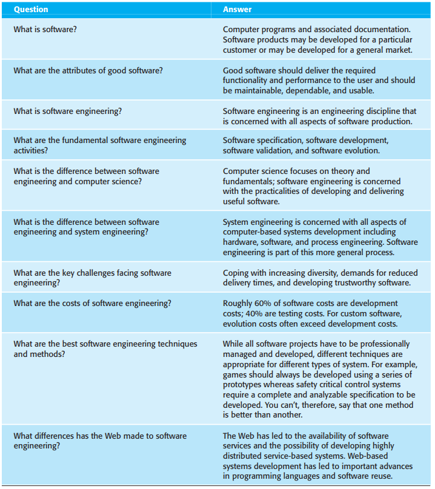
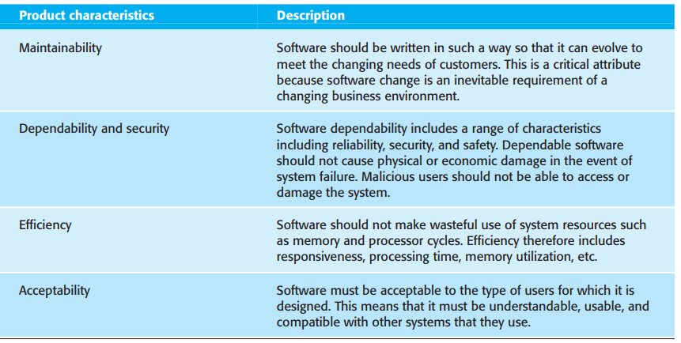

We can’t run the modern world without software. National
infrastructures and utilities are controlled by computer-based
systems and most electrical products include a computer and
controlling software. Industrial manufacturing and distribution is
completely computerized, as is the financial system. Entertainment,
including the music industry, computer games, and film and
television, is software intensive. Therefore, software engineering
is essential for the functioning of national and international
societies. Software systems are abstract and intangible. They are
not constrained by the properties of materials, governed by physical
laws, or by manufacturing processes. This simplifies software
engineering, as there are no natural limits to the potential of
software. However, because of the lack of physical constraints,
software systems can quickly become extremely complex, difficult to
understand, and expensive to change. There are many different types
of software systems, from simple embedded systems to complex,
worldwide information systems. It is pointless to look for universal
notations, methods, or techniques for software engineering because
different types of software require different approaches. Developing
an organizational information system is completely different from
developing a controller for a scientific instrument. Neither of
these systems has much in common with a graphics-intensive computer
game. All of these applications need software engineering; they do
not all need the same software engineering techniques. There are
still many reports of software projects going wrong and ‘software
failures’. Software engineering is criticized as inadequate for
modern software development. However, in my view, many of these
so-called software failures are a consequence of two factors:
Increasing demands As new software engineering
techniques help us to build larger, more complex systems, the
demands change. Systems have to be built and delivered more
quickly; larger, even more complex systems are required; systems
have to have new capabilities that were previously thought to be
impossible. Existing software engineering methods cannot cope and
new software engineering techniques have to be developed to meet
new these new demands.
Low expectations It is relatively easy to write
computer programs without using software engineering methods and
techniques. Many companies have drifted into software development
as their products and services have evolved. They do not use
software engineering methods in their everyday work. Consequently,
their software is often more expensive and less reliable than it
should be. We need better software engineering education and
training to address this problem.
Software engineers can be rightly proud of their achievements. Of
course we still have problems developing complex software but,
without software engineering, we would not have explored space,
would not have the Internet or modern telecommunications. All forms
of travel would be more dangerous and expensive. Software
engineering has contributed a great deal and I am convinced that its
contributions in the 21st century will be even greater.
1.1 Professional software development
Lots of people write programs. People in business write spreadsheet
programs to simplify their jobs, scientists and engineers write
programs to process their experimental data, and hobbyists write
programs for their own interest and enjoyment. However, the vast
majority of software development is a professional activity where
software is developed for specific business purposes, for inclusion
in other devices, or as software products such as information
systems, CAD systems, etc. Professional software, intended for use
by someone apart from its developer, is usually developed by teams
rather than individuals. It is maintained and changed throughout its
life.
Software engineering is intended to support professional software
development, rather than individual programming. It includes
techniques that support program specification, design, and
evolution, none of which are normally relevant for personal software
development. To help you to get a broad view of what software
engineering is about, I have summarized some frequently asked
questions in Figure 1.1.
Many people think that software is simply another word for computer
programs. However, when we are talking about software engineering,
software is not just the programs themselves but also all associated
documentation and configuration data that is required to make these
programs operate correctly. A professionally developed software
system is often more than a single program. The system usually
consists of a number of separate programs and configuration files
that are used to set up these programs. It may include system
documentation, which describes the structure of the system; user
documentation, which explains how to use the system, and websites
for users to download recent product information
This is one of the important differences between professional and
amateur software development. If you are writing a program for
yourself, no one else will use it and you don’t have to worry about
writing program guides, documenting the program design, etc.
However, if you are writing software that other people will use and
other engineers will change then you usually have to provide
additional information as well as the code of the program.

Figure 1.1 Frequently asked questions about software
Software engineers are concerned with developing software products
(i.e., software which can be sold to a customer). There are two
kinds of software products:
Generic products These are stand-alone systems
that are produced by a development organization and sold on the
open market to any customer who is able to buy them. Examples of
this type of product include software for PCs such as databases,
word processors, drawing packages, and project-management tools.
It also includes so-called vertical applications designed for some
specific purpose such as library information systems, accounting
systems, or systems for maintaining dental records.
Customized (or bespoke) products These are
systems that are commissioned by a particular customer. A software
contractor develops the software especially for that customer.
Examples of this type of software include control systems for
electronic devices, systems written to support a particular
business process, and air traffic control systems.
An important difference between these types of software is that, in
generic products, the organization that develops the software
controls the software specification. For custom products, the
specification is usually developed and controlled by the
organization that is buying the software. The software developers
must work to that specification
However, the distinction between these system product types is
becoming increasingly blurred. More and more systems are now being
built with a generic product as a base, which is then adapted to
suit the requirements of a customer. Enterprise Resource Planning
(ERP) systems, such as the SAP system, are the best examples of this
approach. Here, a large and complex system is adapted for a company
by incorporating
When we talk about the quality of professional software, we have to
take into account that the software is used and changed by people
apart from its developers. Quality is therefore not just concerned
with what the software does. Rather, it has to include the
software’s behavior while it is executing and the structure and
organization of the system programs and associated documentation.
This is reflected in so-called quality or non-functional software
attributes. Examples of these attributes are the software’s response
time to a user query and the understandability of the program code
The specific set of attributes that you might expect from a software
system obviously depends on its application. Therefore, a banking
system must be secure, an interactive game must be responsive, a
telephone switching system must be reliable, and so on. These can be
generalized into the set of attributes shown in Figure 1.2, which I
believe are the essential characteristics of a professional software
system.
1.1.1 Software engineering
Software engineering is an engineering discipline that is concerned
with all aspects of software production from the early stages of
system specification through to maintaining the system after it has
gone into use. In this definition, there are two key phrases:
Engineering discipline Engineers make things
work. They apply theories, methods, and tools where these are
appropriate. However, they use them selectively and always try to
discover solutions to problems even when there are no applicable
theories and methods. Engineers also recognize that they must work
to organizational and financial constraints so they look for
solutions within these constraints.

Figure 1.2 Essential attributes of good software
All aspects of software production Software
engineering is not just concerned with the technical processes of
software development. It also includes activities such as software
project management and the development of tools, methods, and
theories to support software production.
Engineering is about getting results of the required quality within
the schedule and budget. This often involves making
compromises—engineers cannot be perfectionists. People writing
programs for themselves, however, can spend as much time as they
wish on the program development.
In general, software engineers adopt a systematic and organized
approach to their work, as this is often the most effective way to
produce high-quality software. However, engineering is all about
selecting the most appropriate method for a set of circumstances so
a more creative, less formal approach to development may be
effective in some circumstances. Less formal development is
particularly appropriate for the development of web-based systems,
which requires a blend of software and graphical design skills
Software engineering is important for two reasons:
More and more, individuals and society rely on advanced software
systems. We need to be able to produce reliable and trustworthy
systems economically and quickly
It is usually cheaper, in the long run, to use software
engineering methods and techniques for software systems rather
than just write the programs as if it was a personal programming
project. For most types of systems, the majority of costs are the
costs of changing the software after it has gone into use.
The systematic approach that is used in software engineering is
sometimes called a software process. A software process is a
sequence of activities that leads to the production of a software
product. There are four fundamental activities that are common to
all software processes. These activities are:
Software specification, where customers and engineers define the
software that is to be produced and the constraints on its
operation
Software development, where the software is designed and
programmed.
Software validation, where the software is checked to ensure that
it is what the customer requires
Software evolution, where the software is modified to reflect
changing customer and market requirements.
Different types of systems need different development processes. For
example, real-time software in an aircraft has to be completely
specified before development begins. In e-commerce systems, the
specification and the program are usually developed together.
Consequently, these generic activities may be organized in different
ways and described at different levels of detail depending on the
type of software being developed. I describe software processes in
more detail in Chapter 2.
Software engineering is related to both computer science and systems
engineering:
Computer science is concerned with the theories and methods that
underlie computers and software systems, whereas software
engineering is concerned with the practical problems of producing
software. Some knowledge of computer science is essential for
software engineers in the same way that some knowledge of physics
is essential for electrical engineers. Computer science theory,
however, is often most applicable to relatively small programs.
Elegant theories of computer science cannot always be applied to
large, complex problems that require a software solution.
System engineering is concerned with all aspects of the
development and evolution of complex systems where software plays
a major role. System engineering is therefore concerned with
hardware development, policy and process design and system
deployment, as well as software engineering. System engineers are
involved in specifying the system, defining its overall
architecture, and then integrating the different parts to create
the finished system. They are less concerned with the engineering
of the system components (hardware, software, etc.).
As I discuss in the next section, there are many different types of
software. There is no universal software engineering method or
technique that is applicable for all of these. However, there are
three general issues that affect many different types of software:
Heterogeneity Increasingly systems are required
to operate as distributed systems across networks that include
different types of computer and mobile devices. As well as running
on general-purpose computers, software may also have to execute on
mobile phones. You often have to integrate new software with older
legacy systems written in different programming languages. The
challenge here is to develop techniques for building dependable
software that is flexible enough to cope with this heterogeneity.
Business and social change Business and society
are changing incredibly quickly as emerging economies develop and
new technologies become available. They need to be able to change
their existing software and to rapidly develop new software. Many
traditional software engineering techniques are time consuming and
delivery of new systems often takes longer than planned. They need
to evolve so that the time required for software to deliver value
to its customers is reduced
Security and trust As software is intertwined
with all aspects of our lives, it is essential that we can trust
that software. This is especially true for remote software systems
accessed through a web page or web service interface. We have to
make sure that malicious users cannot attack our software and that
information security is maintained.
Of course, these are not independent issues. For example, it may be
necessary to make rapid changes to a legacy system to provide it
with a web service interface. To address these challenges we will
need new tools and techniques as well as innovative ways of
combining and using existing software engineering methods.
1.1.2 Software engineering diversity
Software engineering is a systematic approach to the production of
software that takes into account practical cost, schedule, and
dependability issues, as well as the needs of software customers and
producers. How this systematic approach is actually implemented
varies dramatically depending on the organization developing the
software, the type of software, and the people involved in the
development process. There are no universal software engineering
methods and techniques that are suitable for all systems and all
companies. Rather, a diverse set of software engineering methods and
tools has evolved over the past 50 years
Perhaps the most significant factor in determining which software
engineering methods and techniques are most important is the type of
application that is being developed. There are many different types
of application including:
Stand-alone applications These are application
systems that run on a local computer, such as a PC. They include
all necessary functionality and do not need to be connected to a
network. Examples of such applications are office applications on
a PC, CAD programs, photo manipulation software, etc.
Interactive transaction-based applications These
are applications that execute on a remote computer and that are
accessed by users from their own PCs or terminals. Obviously,
these include web applications such as e-commerce applications
where you can interact with a remote system to buy goods and
services. This class of application also includes business
systems, where a business provides access to its systems through a
web browser or special-purpose client program and cloud-based
services, such as mail and photo sharing. Interactive applications
often incorporate a large data store that is accessed and updated
in each transaction.
Embedded control systems These are software
control systems that control and manage hardware devices.
Numerically, there are probably more embedded systems than any
other type of system. Examples of embedded systems include the
software in a mobile (cell) phone, software that controls
anti-lock braking in a car, and software in a microwave oven to
control the cooking process.
Batch processing systems These are business
systems that are designed to process data in large batches. They
process large numbers of individual inputs to create corresponding
outputs. Examples of batch systems include periodic billing
systems, such as phone billing systems, and salary payment
systems.
Entertainment systems These are systems that
are primarily for personal use and which are intended to entertain
the user. Most of these systems are games of one kind or another.
The quality of the user interaction offered is the most important
distinguishing characteristic of entertainment systems.
Systems for modeling and simulation These are
systems that are developed by scientists and engineers to model
physical processes or situations, which include many, separate,
interacting objects. These are often computationally intensive and
require high-performance parallel systems for execution.
Data collection systems These are systems that
collect data from their environment using a set of sensors and
send that data to other systems for processing. The software has
to interact with sensors and often is installed in a hostile
environment such as inside an engine or in a remote location.
Systems of systems These are systems that are
composed of a number of other software systems. Some of these may
be generic software products, such as a spreadsheet program. Other
systems in the assembly may be specially written for that
environment.
Of course, the boundaries between these system types are blurred. If
you develop a game for a mobile (cell) phone, you have to take into
account the same constraints (power, hardware interaction) as the
developers of the phone software. Batch processing systems are often
used in conjunction with web-based systems. For example, in a
company, travel expense claims may be submitted through a web
application but processed in a batch application for monthly
payment.
You use different software engineering techniques for each type of
system because the software has quite different characteristics. For
example, an embedded control system in an automobile is
safety-critical and is burned into ROM when installed in the
vehicle. It is therefore very expensive to change. Such a system
needs very extensive verification and validation so that the chances
of having to recall cars after sale to fix software problems are
minimized. User interaction is minimal (or perhaps nonexistent) so
there is no need to use a development process that relies on user
interface prototyping
For a web-based system, an approach based on iterative development
and delivery may be appropriate, with the system being composed of
reusable components. However, such an approach may be impractical
for a system of systems, where detailed specifications of the system
interactions have to be specified in advance so that each system can
be separately developed.
Nevertheless, there are software engineering fundamentals that apply
to all types of software system:
They should be developed using a managed and understood
development process. The organization developing the software
should plan the development process and have clear ideas of what
will be produced and when it will be completed. Of course,
different processes are used for different types of software.
Dependability and performance are important for all types of
systems. Software should behave as expected, without failures and
should be available for use when it is required. It should be safe
in its operation and, as far as possible, should be secure against
external attack. The system should perform efficiently and should
not waste resources.
Understanding and managing the software specification and
requirements (what the software should do) are important. You have
to know what different customers and users of the system expect
from it and you have to manage their expectations so that a useful
system can be delivered within budget and to schedule.
You should make as effective use as possible of existing
resources. This means that, where appropriate, you should reuse
software that has already been developed rather than write new
software.
These fundamental notions of process, dependability, requirements,
management, and reuse are important themes of this book. Different
methods reflect them in different ways but they underlie all
professional software development.
You should notice that these fundamentals do not cover
implementation and programming. I don’t cover specific programming
techniques in this book because these vary dramatically from one
type of system to another. For example, a scripting language such as
Ruby is used for web-based system programming but would be
completely inappropriate for embedded systems engineering.
1.1.3 Software engineering and the Web
The development of the World Wide Web has had a profound effect on
all of our lives. Initially, the Web was primarily a universally
accessible information store and it had little effect on software
systems. These systems ran on local computers and were only
accessible from within an organization. Around 2000, the Web started
to evolve and more and more functionality was added to browsers.
This meant that web-based systems could be developed where, instead
of a special-purpose user interface, these systems could be accessed
using a web browser. This led to the development of a vast range of
new system products that delivered innovative services, accessed
over the Web. These are often funded by adverts that are displayed
on the user’s screen and do not involve direct payment from users.
As well as these system products, the development of web browsers
that could run small programs and do some local processing led to an
evolution in business and organizational software. Instead of
writing software and deploying it on users’ PCs, the software was
deployed on a web server. This made it much cheaper to change and
upgrade the software, as there was no need to install the software
on every PC. It also reduced costs, as user interface development is
particularly expensive. Consequently, wherever it has been possible
to do so, many businesses have moved to web-based interaction with
company software systems
The next stage in the development of web-based systems was the
notion of web services. Web services are software components that
deliver specific, useful functionality and which are accessed over
the Web. Applications are constructed by integrating these web
services, which may be provided by different companies. In
principle, this linking can be dynamic so that an application may
use different web services each time that it is executed. I cover
this approach to software development in Chapter 19.
In the last few years, the notion of ‘software as a service’ has
been developed. It has been proposed that software will not normally
run on local computers but will run on ‘computing clouds’ that are
accessed over the Internet. If you use a service such as web-based
mail, you are using a cloud-based system. A computing cloud is a
huge number of linked computer systems that is shared by many users.
Users do not buy software but pay according to how much the software
is used or are given free access in return for watching adverts that
are displayed on their screen.
The advent of the web, therefore, has led to a significant change in
the way that business software is organized. Before the web,
business applications were mostly monolithic, single programs
running on single computers or computer clusters. Communications
were local, within an organization. Now, software is highly
distributed, sometimes across the world. Business applications are
not programmed from scratch but involve extensive reuse of
components and programs
This radical change in software organization has, obviously, led to
changes in the ways that web-based systems are engineered. For
example:
Software reuse has become the dominant approach for constructing
web-based systems. When building these systems, you think about
how you can assemble them from pre-existing software components
and systems.
It is now generally recognized that it is impractical to specify
all the requirements for such systems in advance. Web-based
systems should be developed and delivered incrementally.
User interfaces are constrained by the capabilities of web
browsers. Although technologies such as AJAX (Holdener, 2008) mean
that rich interfaces can be created within a web browser, these
technologies are still difficult to use. Web forms with local
scripting are more commonly used. Application interfaces on
web-based systems are often poorer than the specially designed
user interfaces on PC system products.
The fundamental ideas of software engineering, discussed in the
previous section, apply to web-based software in the same way that
they apply to other types of software system. Experience gained with
large system development in the 20th century is still relevant to
web-based software.
Software engineering ethics
Like other engineering disciplines, software engineering is carried
out within a social and legal framework that limits the freedom of
people working in that area. As a software engineer, you must accept
that your job involves wider responsibilities than simply the
application of technical skills. You must also behave in an ethical
and morally responsible way if you are to be respected as a
professional engineer.
It goes without saying that you should uphold normal standards of
honesty and integrity. You should not use your skills and abilities to
behave in a dishonest way or in a way that will bring disrepute to the
software engineering profession. However, there are areas where
standards of acceptable behavior are not bound by laws but by the more
tenuous notion of professional responsibility. Some of these are:
Confidentiality You should normally respect the confidentiality of
your employers or clients irrespective of whether or not a formal
confidentiality agreement has been signed
Competence You should not misrepresent your level of competence. You
should not knowingly accept work that is outside your competence.
Intellectual property rights You should be aware of local laws
governing the use of intellectual property such as patents and
copyright. You should be careful to ensure that the intellectual
property of employers and clients is protected.
Computer misuse You should not use your technical skills to misuse
other people’s computers. Computer misuse ranges from relatively
trivial (game playing on an employer’s machine, say) to extremely
serious (dissemination of viruses or other malware).